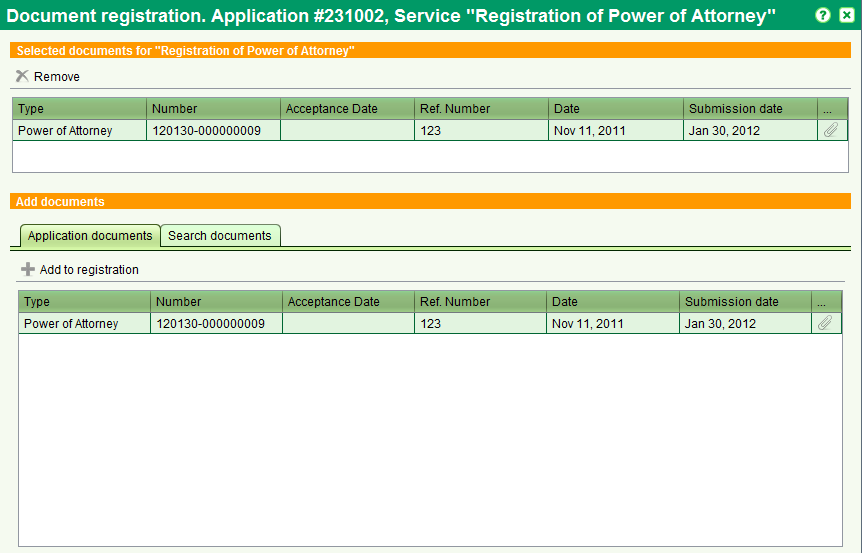

Document registration
The Document Registration screen allows you to register documents for Registration services
( Registration of power of attorney, Registration of Documents ). It can be
accessed by starting one of these Registration service from the Application Details Service tab

You can select the document to be added for registration to the list, both from the Application documents list and by searching other stored documents.
Then click to registration.
You can add to the transaction as many no pending documents as you want.
Documents can be removed from the list using the
remove icon
Also See